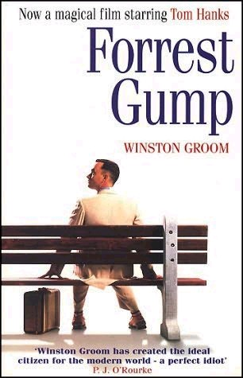
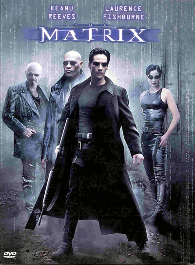

Jack (DiCaprio), un joven artista, gana en una partida de cartas un pasaje para viajar a América en el Titanic, el transatlántico más grande y seguro jamás construido. A bordo conoce a Rose (Kate Winslet), una joven de una buena familia venida a menos que va a contraer un matrimonio de conveniencia con Cal (Billy Zane), un millonario engreído a quien sólo interesa el prestigioso apellido de su prometida. Jack y Rose se enamoran, pero el prometido y la madre de ella ponen todo tipo de trabas a su relación. Mientras, el gigantesco y lujoso transatlántico se aproxima hacia un inmenso iceberg. (FILMAFFINITY)
Reparto :
Leonardo DiCaprio
Kate Winslet
Billy Zane
Gloria Stuart
Bill Paxton
Kathy Bates
Frances Fisher
Victor Garber
Avatar
Sinopsis :
Avatar (comercializada como Avatar de James Cameron) es una película épica de ciencia ficción estadounidense de 2009, escrita, producida y dirigida por James Cameron y protagonizada por Sam Worthington, Zoe Saldaña, Sigourney Weaver, Stephen Lang y Michelle Rodríguez.
Reparto :
Sam Worthington
Zoe Saldaña
Billy Zane
Sigourney Weaver
Michelle Rodríguez
Stephen Lang
Giovanni Ribisi
Joel David Moore
Forest Gump

Sinopsis :
Forrest Gump es una película estadounidense estrenada en el año 1994. Dirigida por Robert Zemeckis (Náufrago, Polar Express), Forrest Gump está basada en la novela homónima escrita por Winston Groom. Forrest Gump ganó 6 Oscars de la academia, incluyendo mejor película, mejor director y mejor actor.
Reparto :
Frances Fisher
Kate Winslet
Billy Zane
Sigourney Weaver
Gloria Stuart
Stephen Lang
Kathy Bates
Joel David Moore
Matrix

Sinopsis :
Matrix es una trilogía de películas de ciencia ficción escritas y dirigidas por las hermanas Wachowski. Protagonizadas por Keanu Reeves, Laurence Fishburne, Carrie-Anne Moss y Hugo Weaving, la misma consta de The Matrix (1999), The Matrix Reloaded (2003) y The Matrix Revolutions (2003). Curiosamente, las dos últimas fueron rodadas a la vez pero estrenadas con un tiempo de diferencia, aprovechando el éxito de la primera.